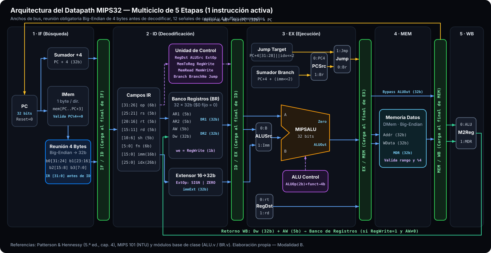
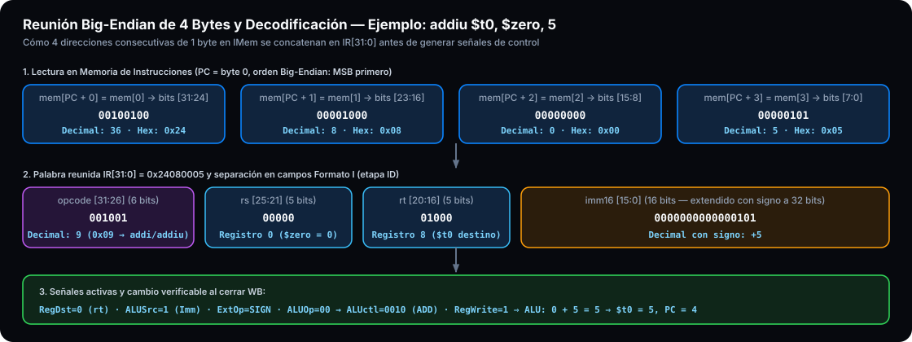
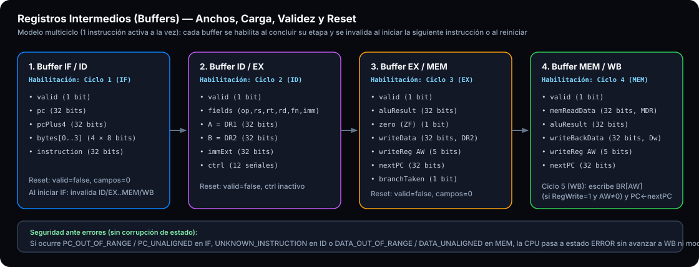

Ensamblar
Traducir texto MIPS a palabras de 32 bits con etiquetas, validación de rangos y diagnósticos por línea, y exportar una imagen .hex cargable.
Universidad de Guadalajara · CUCEI · Arquitectura de Computadoras
Ensamblador de 2 pasadas, memoria big-endian de 1 byte por dirección y procesador multiciclo de 5 etapas (IF, ID, EX, MEM, WB) con 12 instrucciones. El simulador muestra cómo los bits de cada instrucción se convierten en señales de control y cambian el PC, los buffers, los registros y la memoria.
El proyecto construye y valida, en el navegador, un sistema MIPS de 32 bits completo: un programa en ensamblador se traduce a código máquina, se carga en una memoria de instrucciones de 1 byte por dirección y se ejecuta paso a paso en una ruta de datos multiciclo con una instrucción activa a la vez.
Traducir texto MIPS a palabras de 32 bits con etiquetas, validación de rangos y diagnósticos por línea, y exportar una imagen .hex cargable.
Implementar las 12 instrucciones del proyecto en 5 etapas, con búsqueda big-endian de 4 bytes, buffers entre etapas y detención visible ante errores.
Mostrar en cada etapa el PC, los bytes leídos, los campos, las señales de control, las rutas activas y los cambios de registros y memoria.
Comprobar cada instrucción, los casos de integración de la consigna y un algoritmo completo (Selection Sort) con tres entradas, incluida una de borde.
Procesador multiciclo de 5 etapas con una instrucción activa a la vez. Cada etapa toma un ciclo y actualiza un registro intermedio, así que cada instrucción tarda 5 ciclos. Los saltos se aplican sin ranura de retardo.



| Etapa | Qué hace | Buffer que carga |
|---|---|---|
| IF | Valida que el PC esté alineado y dentro del programa, lee mem[PC..PC+3] y forma la palabra big-endian. | IF/ID: PC, PC+4, 4 bytes, instrucción |
| ID | Separa los campos, genera las 12 señales de control, lee R[rs] y R[rt] y extiende el inmediato (con signo o con ceros). | ID/EX: campos, A, B, inmediato extendido, control |
| EX | Opera en la ALU, calcula la dirección efectiva, el destino de rama o de j y el siguiente PC. | EX/MEM: resultado ALU, Zero, destinos, siguiente PC |
| MEM | lw lee y sw escribe una palabra big-endian; un acceso inválido detiene sin modificar nada. | MEM/WB: dato leído, dato a escribir |
| WB | Escribe el registro destino (las escrituras a $zero se descartan) y actualiza el PC. | Banco de registros y PC |
| Módulo | Ubicación | Responsable |
|---|---|---|
| Contratos de tipos e ISA | SRC/core/types.ts, SRC/core/isa.ts | Alejandro Espinoza |
| CPU: ALU, banco de registros, memorias, control y máquina de 5 etapas | SRC/core/cpu/ | Alejandro Espinoza |
| Ensamblador y CLI de imágenes | SRC/core/assembler/ | Fares Khalifa |
| Programas, ejemplos R/I/J y entradas | SRC/programs/ | Fares Khalifa |
| Simulador web (datapath SVG, señales, paneles) | SRC/simulator/ | Alejandro Espinoza |
| Pruebas automatizadas | VERIF/tests/ | Ambos |
| Trazas y reporte de pruebas | VERIF/traces/, VERIF/results/ | Fares Khalifa (traza R: Alejandro) |
| Módulos de referencia del curso | RTL/referencia/ | Material de clase |
Las 11 filas de la tabla de la consigna más bne, que la consigna menciona en la validación del ensamblador.
addiu se acepta como alias de addi (mismo opcode). Las señales son las que genera la unidad de control.
| Tipo | Sintaxis | Opcode / funct | Operación | RegDst | ALUSrc | ExtOp | MemToReg | RegWrite | MemRead | MemWrite | Branch | BranchNe | Jump | ALUOp | ALUctl |
|---|---|---|---|---|---|---|---|---|---|---|---|---|---|---|---|
| R | add $rd, $rs, $rt | 00 / 21 | Suma módulo 2³² | 1 | 0 | — | 0 | 1 | 0 | 0 | 0 | 0 | 0 | 10 | 0010 |
| R | sub $rd, $rs, $rt | 00 / 23 | Resta módulo 2³² | 1 | 0 | — | 0 | 1 | 0 | 0 | 0 | 0 | 0 | 10 | 0110 |
| R | and $rd, $rs, $rt | 00 / 24 | AND bit a bit | 1 | 0 | — | 0 | 1 | 0 | 0 | 0 | 0 | 0 | 10 | 0000 |
| R | or $rd, $rs, $rt | 00 / 25 | OR bit a bit | 1 | 0 | — | 0 | 1 | 0 | 0 | 0 | 0 | 0 | 10 | 0001 |
| R | slt $rd, $rs, $rt | 00 / 2A | 1 si rs < rt con signo, si no 0 | 1 | 0 | — | 0 | 1 | 0 | 0 | 0 | 0 | 0 | 10 | 0111 |
| I | addi $rt, $rs, #imm | 09 | Suma con inmediato extendido con signo | 0 | 1 | signo | 0 | 1 | 0 | 0 | 0 | 0 | 0 | 00 | 0010 |
| I | ori $rt, $rs, #imm | 0D | OR con inmediato extendido con ceros | 0 | 1 | ceros | 0 | 1 | 0 | 0 | 0 | 0 | 0 | 11 | 0001 |
| I | lw $rt, #desp($rs) | 23 | Carga palabra de R[rs] + desp | 0 | 1 | signo | 1 | 1 | 1 | 0 | 0 | 0 | 0 | 00 | 0010 |
| I | sw $rt, #desp($rs) | 2B | Guarda R[rt] en R[rs] + desp | 0 | 1 | signo | 0 | 0 | 0 | 1 | 0 | 0 | 0 | 00 | 0010 |
| I | beq $rs, $rt, #etiqueta | 04 | Salta si rs = rt | 0 | 0 | signo | 0 | 0 | 0 | 0 | 1 | 0 | 0 | 01 | 0110 |
| I | bne $rs, $rt, #etiqueta | 05 | Salta si rs ≠ rt | 0 | 0 | signo | 0 | 0 | 0 | 0 | 0 | 1 | 0 | 01 | 0110 |
| J | j #etiqueta | 02 | Salta a PC+4[31:28] · índice · 00 | 0 | 0 | — | 0 | 0 | 0 | 0 | 0 | 0 | 1 | 00 | 0010 |
Campos de mayor a menor peso — R: opcode(6) rs(5) rt(5) rd(5) shamt(5) funct(6) · I: opcode(6) rs(5) rt(5) inmediato(16) ·
J: opcode(6) índice(26). En beq/bne el destino es PC + 4 + 4 × inmediato.
.hex (1 byte por línea) y el listado (dirección, palabra, binario por campos y fuente).Acepta registros numéricos ($0–$31) y alias ($zero, $t0–$t9, $s0–$s7…), comentarios con # y el prefijo # de la consigna en inmediatos y etiquetas (#5, #fin).
| Código | Cuándo |
|---|---|
INVALID_MNEMONIC | Instrucción desconocida |
INVALID_REGISTER | Registro fuera de $0–$31 o alias inexistente |
INVALID_SYNTAX | Operandos faltantes, de más o mal formados |
DUPLICATE_LABEL / UNDEFINED_LABEL | Etiqueta repetida o no definida |
IMMEDIATE_OUT_OF_RANGE | addi/lw/sw fuera de [−32768, 32767]; ori fuera de [0, 65535] |
BRANCH_OUT_OF_RANGE | Desplazamiento de beq/bne que no cabe en 16 bits con signo |
UNALIGNED_TARGET / JUMP_OUT_OF_REGION | Destino no alineado a 4 o j fuera de la región de 256 MiB de PC+4 |
Ejemplo de la consigna: addiu $t0, $zero, 5 → 0x24080005 → bytes 24 08 00 05 en las direcciones 0 a 3.
selection_sort.asm
ordena de menor a mayor (con signo) un arreglo en la memoria de datos. Tiene 28 instrucciones, usa las 12 de la ISA
(formatos R, I y J), un ciclo doble, decisiones con slt, beq y bne, accesos
lw/sw y termina en el autosalto fin: j fin con el arreglo ya ordenado.
N = Mem[0x0000]
base = 0x0004
for i = 0 to N - 2:
minIdx = i
for j = i + 1 to N - 1:
if A[j] < A[minIdx]: # slt, con signo
minIdx = j
if minIdx != i:
intercambiar A[i] y A[minIdx] # lw / sw
fin: goto finA[k] es la palabra en 0x0004 + 4k. La ISA no tiene multiplicación: i, j y minIdx se manejan como desplazamientos en bytes (de 4 en 4) y N × 4 se calcula con dos sumas.
| Registro | Uso |
|---|---|
$s0 | Base del arreglo (4) |
$s1 | N |
$s2 | N × 4 (límite en bytes) |
$t0 / $t1 / $t2 | Desplazamientos de i, minIdx y j |
$t3 / $t4 | Direcciones y valores de A[minIdx] y A[j] |
$t5 | Resultado de slt / minIdx − i |
$t6 / $t7 | Temporal del intercambio / dirección de A[i] |
| Dirección | Contenido |
|---|---|
0x0000 | N (≥ 1) |
0x0004 + 4k | A[k], palabra de 32 bits big-endian |
Diseño completo (pseudocódigo por desplazamientos, bosquejo instrucción por instrucción y evolución por pasada): propuesta del algoritmo.
| Entrada | Memoria inicial | Esperado | Observado | Instrucciones | Ciclos | Resultado |
|---|---|---|---|---|---|---|
| 1 · Caso estándar | N = 5, [25, 4, 17, 1, 9] | [1, 4, 9, 17, 25] | [1, 4, 9, 17, 25] | 138 | 690 | ✓ Correcto |
| 2 · Negativos y duplicados | N = 5, [-3, 7, -3, 0, -10] | [-10, -3, -3, 0, 7] | [-10, -3, -3, 0, 7] | 138 | 690 | ✓ Correcto |
3 · Borde (N = 1) | N = 1, [42] | [42] | [42] | 8 | 40 | ✓ Correcto |
Las tres terminan en el autosalto fin (0x6C). La entrada 2 confirma que slt compara con signo: sin signo, −10 = 0xFFFFFFF6 quedaría al final.
Archivo (VERIF/tests/) | Qué verifica | Pruebas |
|---|---|---|
smoke.test.ts | Contratos de la ISA, big-endian, alias de registros, extensiones y $zero | 6 |
assembler.test.ts | Codificación de las 12 instrucciones, etiquetas, .hex, listado y todos los diagnósticos | 61 |
isa.test.ts | Ejecución de cada instrucción etapa por etapa, buffers, memorias y errores de PC | 13 |
integration.test.ts | Casos de integración de la consigna, ensamblados desde texto | 9 |
algorithm.test.ts | Selection Sort con las 3 entradas, instrucciones hasta fin, .hex actualizados y ejemplo tipo J | 9 |
datapathView.test.ts | Modelo visual del datapath del simulador | 9 |
traces.test.ts | Las trazas R, I y J coinciden con la ejecución real | 4 |
24 08 00 05)$zero descartadasaddi negativo) y con ceros (ori 0xFFFF)lw/sw big-endianj que omite una instrucción con efecto visibleDetalle completo con la prueba que cubre cada caso: reporte de pruebas.
Cada traza sigue una instrucción real de selection_sort.asm (entrada 1) por las 5 etapas: PC, 4 bytes, palabra, campos, 12 señales de control, contenido de los 4 buffers y estado antes y después. Se generan ejecutando la CPU y una prueba verifica que sigan coincidiendo.
R PC 0x30
slt $t5, $t4, $t3Palabra 0x018B682A. Compara A[1] = 4 con A[0] = 25 con signo (ALUctl = 0111) y escribe $t5 = 1.
I PC 0x04
lw $s1, 0($zero)Palabra 0x8C110000. Dirección efectiva 0 + 0 = 0; en MEM lee N y en WB escribe $s1 = 5.
J PC 0x68
j outerPalabra 0x08000005. Destino PC+4[31:28] · 5 · 00 = 0x14: regresa a outer sin escribir registros ni memoria (PC 0x68 → 0x14).
git clone https://github.com/Joesnes/mips32-simulador-cucei.git
cd mips32-simulador-cucei/SRC
npm cinpm run typecheck
npm test
npm run build.hex con 1 byte por línea y .lst con el listado):
npm run assemble -- programs/selection_sort.asmnpx tsx ../VERIF/traces/generar_trazas.tsnpm run dev en local), elegir Selection Sort y una de las 3 entradas, ensamblar y avanzar por etapa o por instrucción hasta fin.
ALU.v, BR.v y BBVA.v (RTL/referencia/).Conforme a la consigna, se declara por módulo la herramienta usada. El propósito, lo que se incorporó o descartó y cómo se comprobó cada aporte están en la declaración completa.
| Módulo | Responsable | Herramienta |
|---|---|---|
| Arquitectura, contratos ISA y CI/CD | Alejandro Espinoza | Antigravity (Gemini) |
| Núcleo CPU, memorias y pruebas de integración | Alejandro Espinoza | Antigravity (Gemini) |
| Visualizador del datapath e interfaz del simulador | Alejandro Espinoza | Antigravity (Gemini / Orchestrator) |
| Ensamblador y CLI de imágenes | Fares Khalifa | Claude (Anthropic), mediante Claude Code |
| Algoritmo, ejemplos y datasets | Fares Khalifa | Claude (Anthropic), mediante Claude Code |
| Trazas, reporte de pruebas y reporte técnico | Fares Khalifa | Claude (Anthropic), mediante Claude Code |
Pendiente (Día 8).
Pendiente (Día 8).
Ensambla Selection Sort, elige una entrada y avanza etapa por etapa.
Abrir el simulador